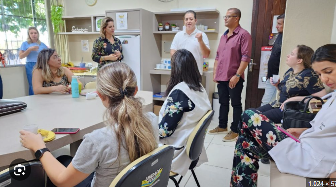

Bem-vindo ao meu espaço inicial. Aqui você confere minha jornada acadêmica, minhas habilidades em desenvolvimento e o caminho que escolhi para transformar o meu futuro profissional.

Enquanto a maioria das pessoas passa anos presa em teorias ultrapassadas, quem escolhe o caminho certo já sai na frente. Estudar na Unidade Polo foi a virada de chave que eu precisava para a minha carreira, e pode ser a sua também.
O mercado de trabalho busca profissionais práticos, qualificados e prontos para resolver problemas reais. É exatamente isso que o Curso Técnico na Unidade Polo entrega desde o primeiro dia de aula.
Não seja apenas mais um currículo na pilha de desempregados. Faça a escolha inteligente que eu fiz. Venha para a Unidade Polo e conquiste sua independência profissional antes mesmo de terminar os estudos.
Quero Mudar de Vida